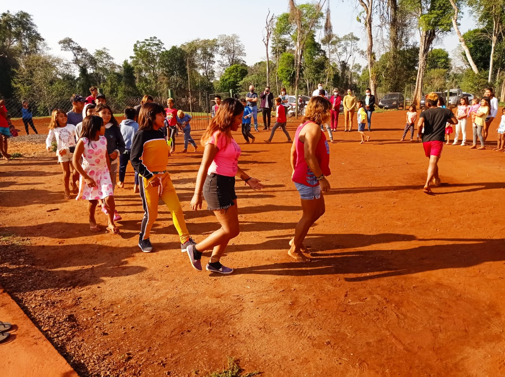

<section id="homeDonations">
  <div class="homeDonationsGrid" data-aos="fade-up">
    <div class="homeDonationsGridImg">
      
    </div>
    <div class="homeDontationsGridText text-lg-start" data-aos="flip-up">
      <h3 class="display-4">Donaciones</h3>
      <p>
        Recibimos donaciones para aquellos que deseen colaborar para mejorar la
        vida de miles de Misioneros y darles la oportunidad de salir adelante .
      </p>
      <button class="btn btn-info">
        <a [routerLink]="'Donaciones'">Más información</a>
      </button>
    </div>
  </div>
</section>
